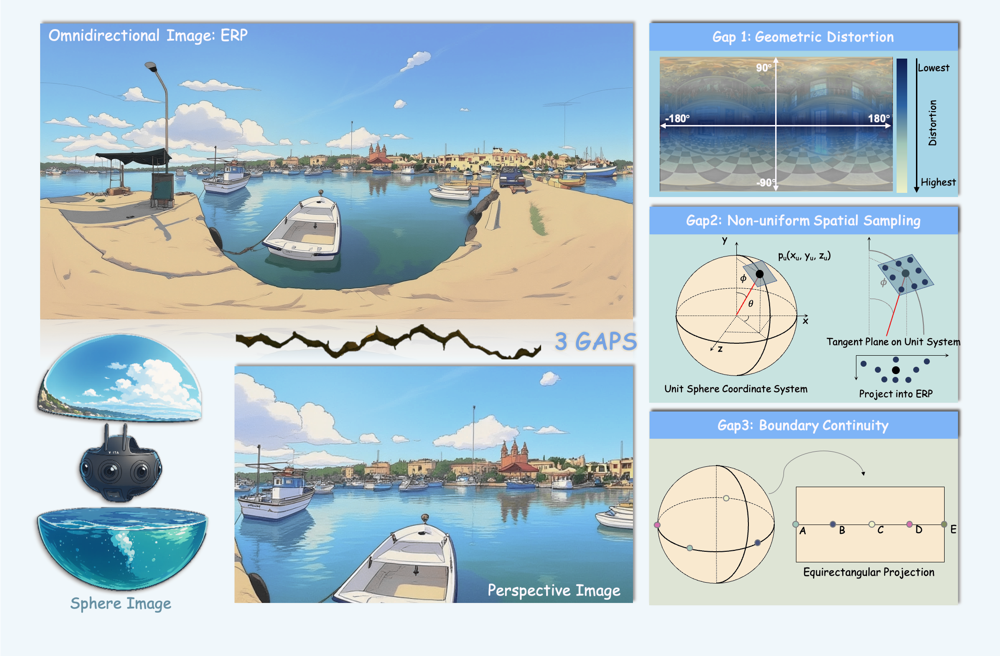

Panoramic Tasks

Panoramic Imaging Systems

Projection Models (ERP, CMP, TP, etc.)

Panoramic Vision Task Map
Xin Lin, Dizhe Zhang, Xian Ge, Xianshun Wang, Zhaoliang Wan, Xiangtai Li,
Wenjie Jiang, Bo Du, Truong Nguyen, Ming-Hsuan Yang, Lu Qi
Panoramic vision enables full 360° perception for VR, robotics, and autonomous driving. This survey systematically reviews panoramic imaging, projection models, and adaptation from perspective to panorama. We summarize 20+ tasks, 300+ papers, and discuss emerging trends like diffusion, 3D Gaussian Splatting, multimodal fusion, and world model.
Super-resolution, denoising, deblurring, reflection removal, IQA.
Segmentation, detection, layout estimation, optical flow, saliency.
Completion, novel view synthesis, text-to-360, AIGC-based panoramas.
Fusion with text, audio, and LiDAR for embodied AI and navigation.
Panoramic Imaging Systems
Projection Models (ERP, CMP, TP, etc.)
Panoramic Vision Task Map
@article{lin2025panorama,
title={One Flight Over the Gap: A Survey from Perspective to Omnidirectional Vision},
author={Lin, Xin and Zhang, Dizhe and Ge, Xian and Wang, Xianshun and Wan, Zhaoliang and Li, Xiangtai and Jiang, Wenjie and Du, Bo and Nguyen, Truong and Yang, Ming-Hsuan and Qi, Lu},
journal={arXiv},
year={2025}
}